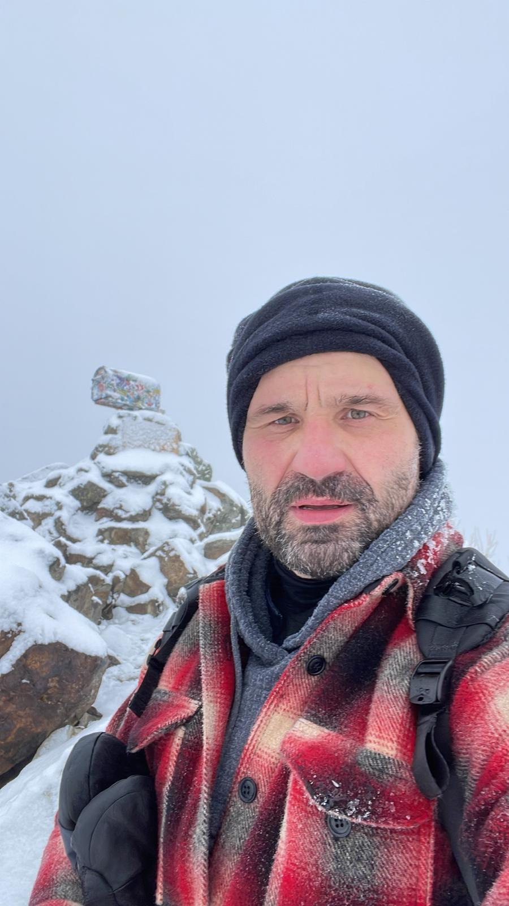

Principal Software Engineer · Performance Engineering
20+ years building, debugging, and optimizing enterprise systems at Microsoft and Salesforce. From SQL Server engine internals to cloud-scale distributed architecture.

Principal Software Engineer and technical lead specializing in database engine internals, runtime integration, and performance optimization at scale.
Led cross-org initiatives at Microsoft and Salesforce spanning multiple platform teams and product releases. Mentor and technical leader for engineering teams in low-level debugging, systems programming, and algorithm design.
Interested in discussing opportunities, technical challenges, or collaboration.